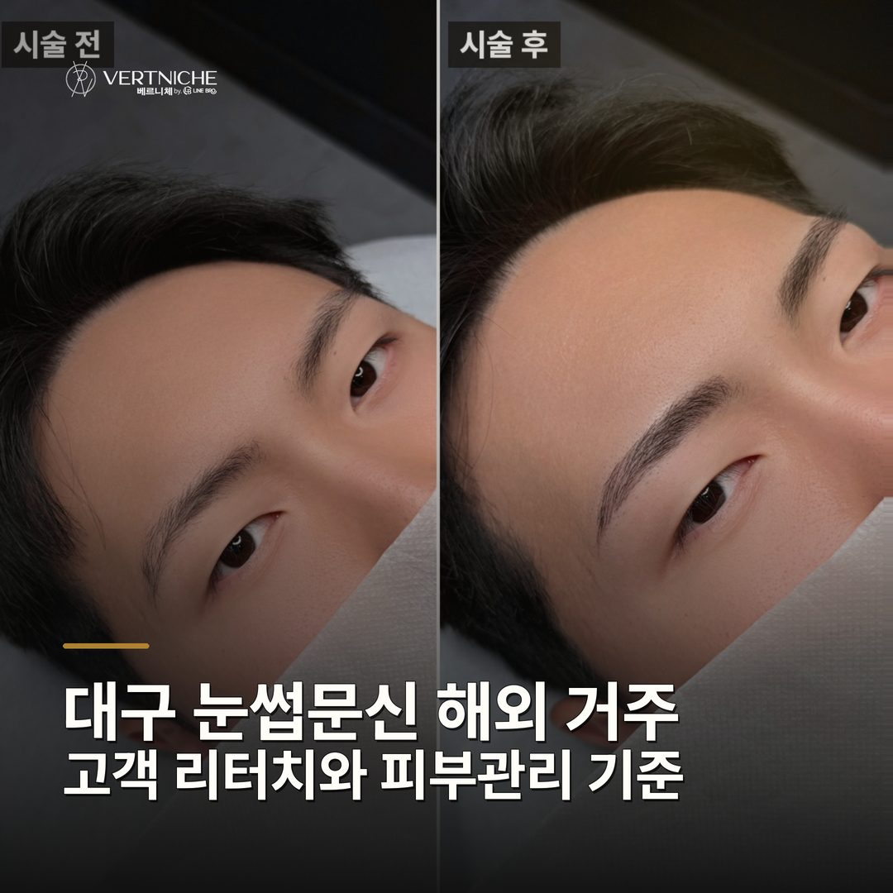
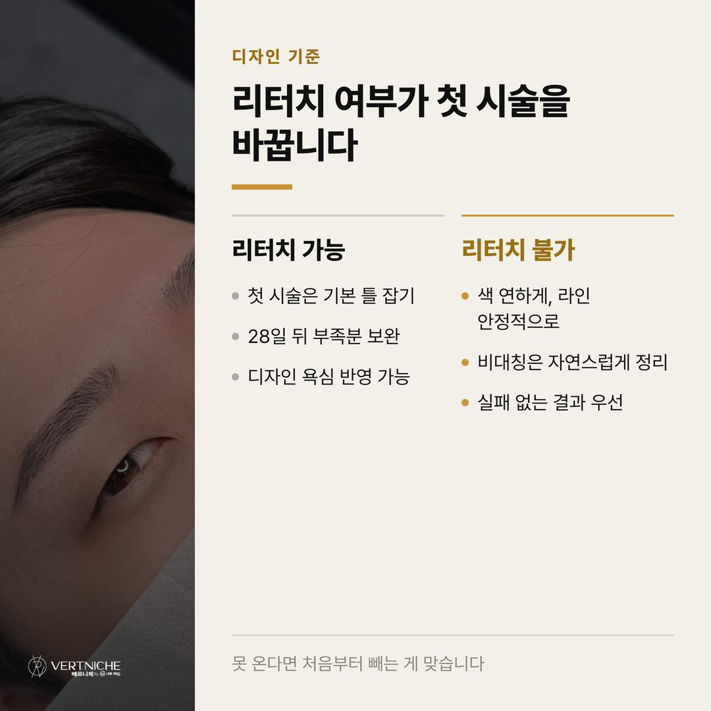
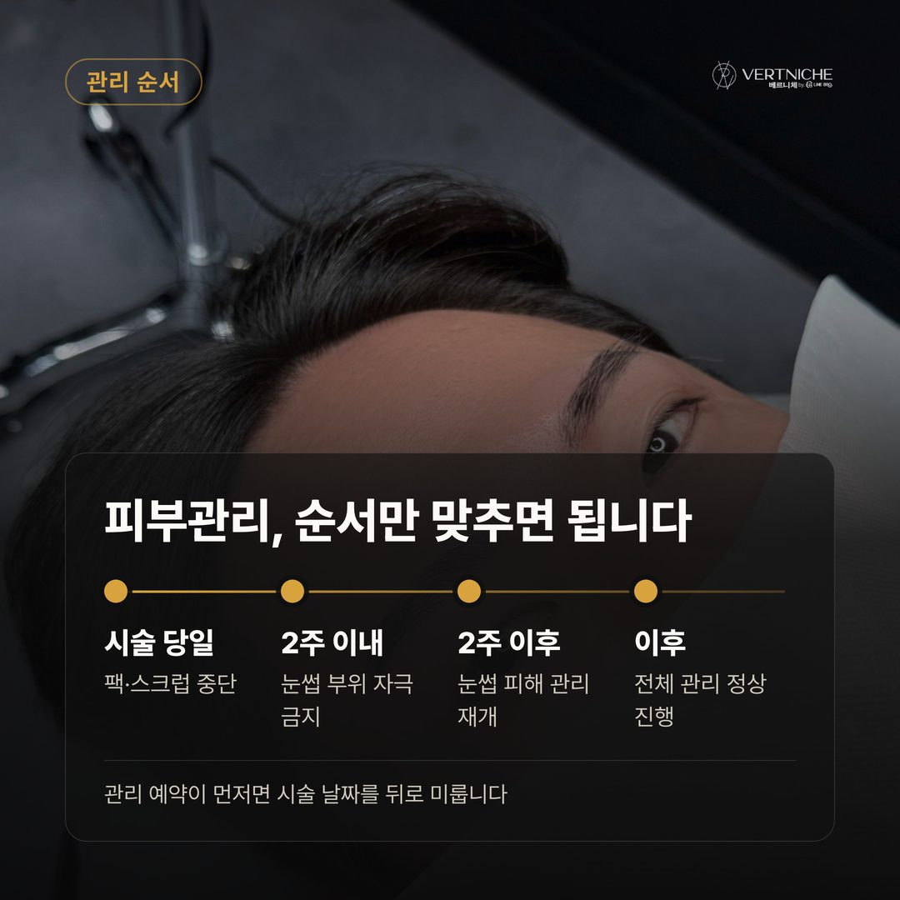
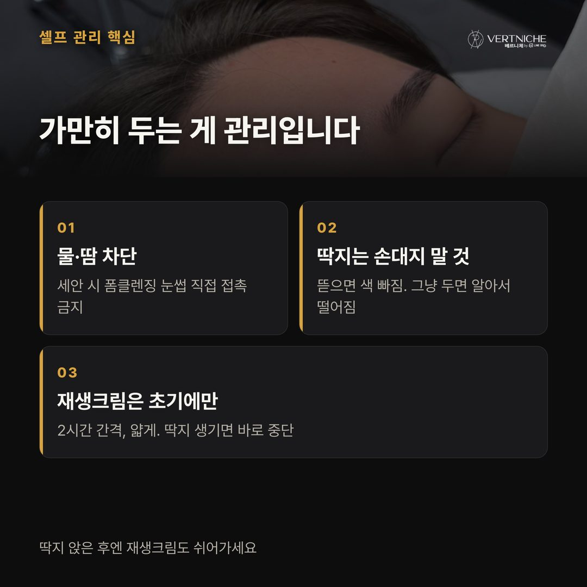
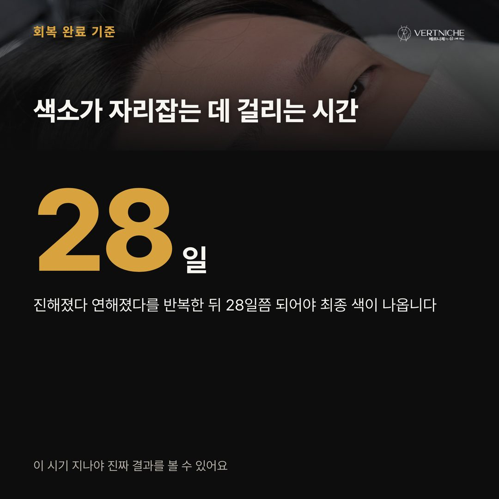
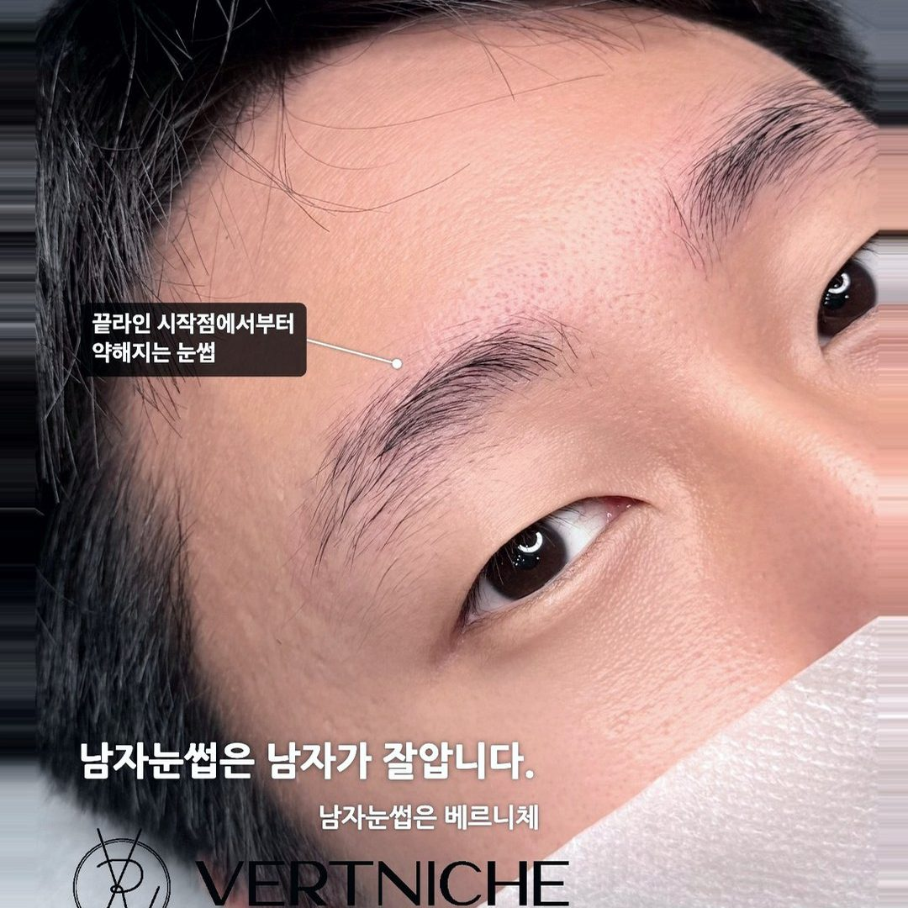
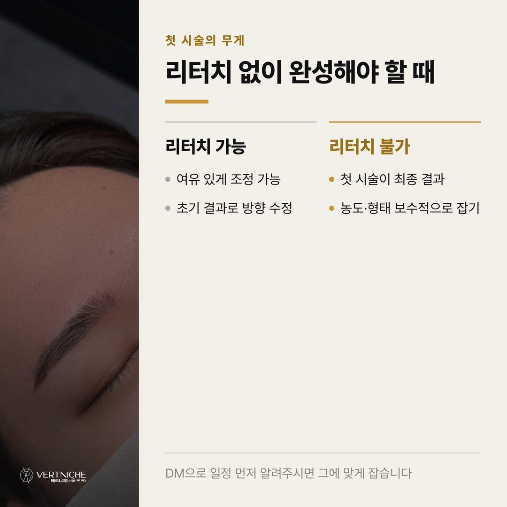
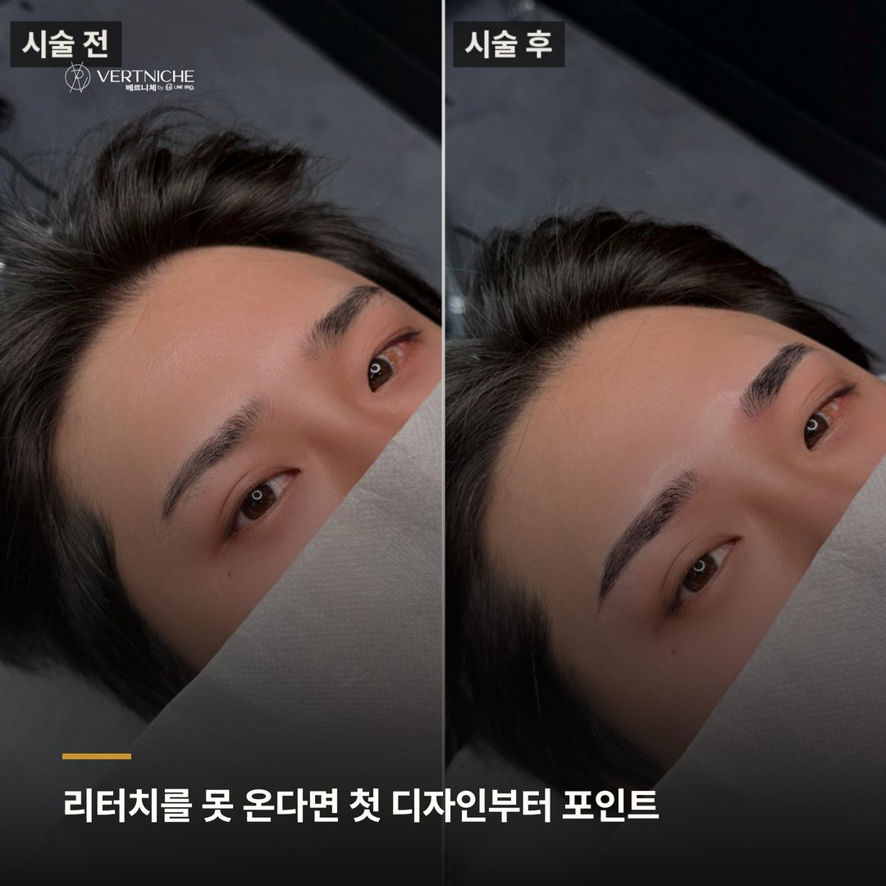
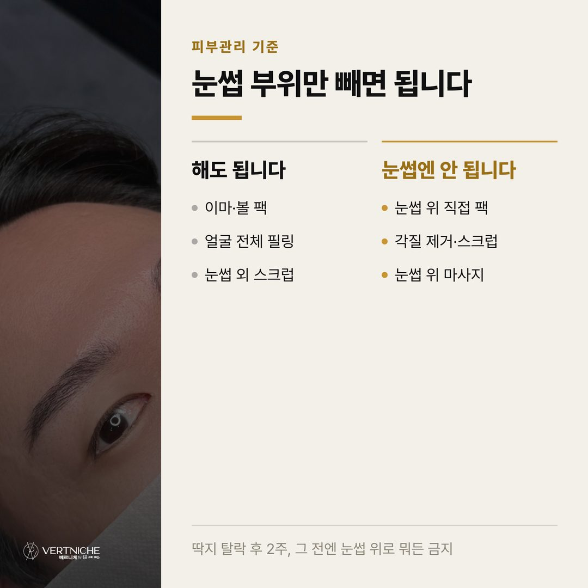
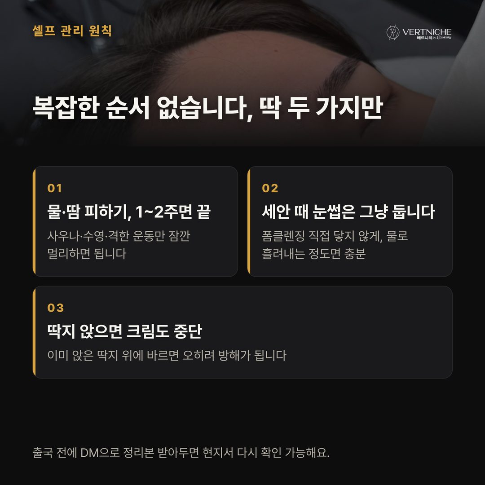

대구 눈썹문신 해외 거주 고객 리터치와 피부관리 기준

리터치를 못 온다는 이유로 눈썹문신을 포기하려는 분들이 생각보다 많아요.
해외 거주 고객분들의 상담은 거의 같은 문장으로 시작해요. "출장 때문에 리터치 오기가 힘든데 괜찮을까요." 그리고 여기에 하나가 더 따라붙죠. "피부관리 받는데 팩 발라도 되나요." 이 두 가지가 겹쳐서 결국 시술 자체를 망설이게 만드는 거예요. 대구에서 7년, 5,500명 넘게 케어하면서 이런 케이스를 꽤 봤고, 그 경험을 바탕으로 조건별로 어떻게 준비하는지 정리했습니다.
리터치를 못 온다면, 첫 디자인부터 달라져야 해요
남자 눈썹문신은 보통 시술 1회에 리터치 1회를 붙여서 봐요. 처음에 전체적인 형태를 잡고, 28일 뒤에 빠진 부분이나 부족한 부분을 보완하는 흐름이죠. 근데 해외 거주라 리터치가 어렵다면 이 흐름이 처음부터 달라질 수밖에 없어요.
한 번에 끝내야 하는 조건이면, 저는 첫 디자인을 평소보다 더 보수적으로 잡아요. 진하게 넣으면 나중에 후회해도 뺄 방법이 없거든요.
그래서 색은 살짝 연하게, 라인은 최대한 안정적으로 가요. 비대칭이 있는 분도 완벽한 교정보다 자연스러운 정리 쪽으로 방향을 잡습니다. 다시 못 오는 조건에서는 화려한 결과보다 실패 없는 결과가 훨씬 나으니까요.
피부관리와 팩, 사실 눈썹만 피하면 돼요
시술 후에도 피부관리를 계속 받고 싶다는 분들, 결론부터 말씀드리면 눈썹 부위만 피하면 문제없어요. 관리실에 "눈썹 위쪽은 피해주세요" 한마디만 하면 이마 팩, 얼굴 필링 다 가능해요. 시술 부위에 직접 자극이나 각질 제거만 안 가면 됩니다.
다만 시기는 지켜야 해요. 딱지가 다 떨어지고 색이 자리 잡는 데까지 최소 2주는 봐야 하거든요. 그 전에 눈썹 위로 팩이나 스크럽이 지나가면 색이 고르게 안 남아요. 피부관리 예약이 촘촘한 분은 그 사이에 여유를 두고 시술 날짜를 잡는 게 좋아요.
리터치 없이 유지하는 셀프 관리
리터치를 못 오면 스스로 관리하는 게 전부인데, 사실 어렵지 않아요. 물과 땀 조심하고 가만히 두는 것이 기본이에요.
시술 후 1~2주는 사우나, 수영, 격한 운동을 피하고, 세안할 때 폼클렌징이 눈썹에 직접 닿지 않게 해야 해요. 딱지가 생기면 절대 뜯지 말고 자연스럽게 떨어지게 두세요. 상처가 아무는 동안에는 재생크림이나 바셀린을 2시간에 한 번 얇게 발라주면 되는데, 딱지가 이미 두껍게 앉았으면 오히려 안 바르는 게 나아요.
이 흐름만 지키면 리터치 없이도 색이 생각보다 잘 남더라고요. 해외 나가시기 전에 이 관리법을 문자나 인스타 DM으로 정리해서 보내드려요. 문자가 안 닿는 지역도 있어서 DM으로 남겨두면 나중에 다시 꺼내 확인하기도 편하고요.
회복 흐름을 알고 나가야 해외에서 당황하지 않아요
리터치를 못 오는 분에게 이게 사실 제일 필요한 준비예요. 해외에서는 뭔가 이상해도 바로 물어볼 데가 없으니까요.
회복 흐름은 대략 이렇게 이어져요.
시기
상태
1일차
색이 아직 발색 안 됨
2~4일차
색이 올라오면서 진해 보임
5~7일차
탈각 시작, 빠지는 것 같아 걱정
8~14일차
오히려 연해 보임, 잉크가 다 빠진 것 같은 시기
15일차~
피부 속 색소가 다시 올라오기 시작
28일차
기존 눈썹과 자연스럽게 어우러짐
이 흐름을 모르고 나가면 진해지는 시기에 당황하고, 연해지는 시기에 후회하게 되거든요. 반대로 알고 있으면 "지금 이 단계구나" 하고 넘어갈 수 있어요. 리터치보다 이 준비가 더 실질적인 이유예요.
자주 묻는 것들, 짧게 답할게요
시술 후 며칠 뒤에 비행기를 타도 되나요? 당일 비행도 불가능하진 않지만, 하루 이틀 여유를 두는 걸 권해요. 기내 건조함이 회복에 좋진 않아서, 딱지가 앉기 전이라면 재생크림을 얇게 챙겨 발라주시면 돼요.
팩이나 필링은 언제부터 받아도 되나요?
눈썹 부위를 피한다면 얼굴 다른 부위는 시술 직후에도 괜찮아요. 눈썹 위쪽은 색이 자리 잡는 최소 2주 후부터가 안전합니다.
리터치를 아예 못 받으면 오래 못 가나요? 아니에요. 착색이 잘 되면 리터치 없이도 충분히 유지돼요. 리터치는 필수가 아니라 부족한 부분을 보완하는 개념이라, 첫 시술만 잘 잡으면 걱정 안 하셔도 됩니다.
포스팅 요약
• 리터치가 어려운 조건이라면 첫 디자인을 보수적으로, 색은 연하게, 라인은 안정적으로 잡는다
• 시술 후 피부관리는 눈썹 부위만 피하면 가능하며, 눈썹 위쪽은 최소 2주 후부터 안전
• 회복 흐름(1~28일 단계)을 미리 파악하고 나가는 것이 리터치보다 더 실질적인 준비
해외 일정 있으신 분은 대구 오시기 전에 인스타 DM으로 상황 먼저 알려주시면, 조건에 맞게 디자인과 관리법을 같이 잡아드릴게요.
더 보기 / 상담
남자관리 사례랑 눈썹문신 결과는 인스타에 계속 올리고 있어요. 시술 사진이랑 관리 팁은 아래 링크에서 더 보실 수 있습니다.
남겨주시면 됩니다.
시술 사진









이 글은 네이버 블로그에도 같은 내용으로 올라가 있습니다.